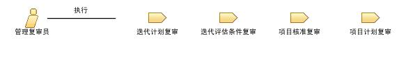

| 角色：管理复审员 |

关系
 |
|
| 修改 | |
|---|---|
| 流程使用情况 | |
主要描述
|
管理复审员角色参与重大的复审事件，因为这些管理复审工作标记一些点，在这些点处，如果计划不够充分或者进度慢得令人难以接受，项目可能会被取消。 |
人员配备
| 技能 |
管理复审员角色需要有多年的业务（包括合同拟定和谈判）经验、技术经验和软件项目管理经验，而且被选中来担任此角色的原因是他显示出运营管理级别的决策能力。管理复审员必须对风险管理原则有深入的了解，且必须善于在信息不全面或不明确的环境下进行估计。 |
|---|---|
| 分配方法 |
根据正在进行复审的工作产品、所涉及的团队和可参与复审的团队成员的情况，逐个地为每个案例将该角色分配给一个或多个人。 |
© Copyright IBM Corp. 1987, 2006. All Rights Reserved. |